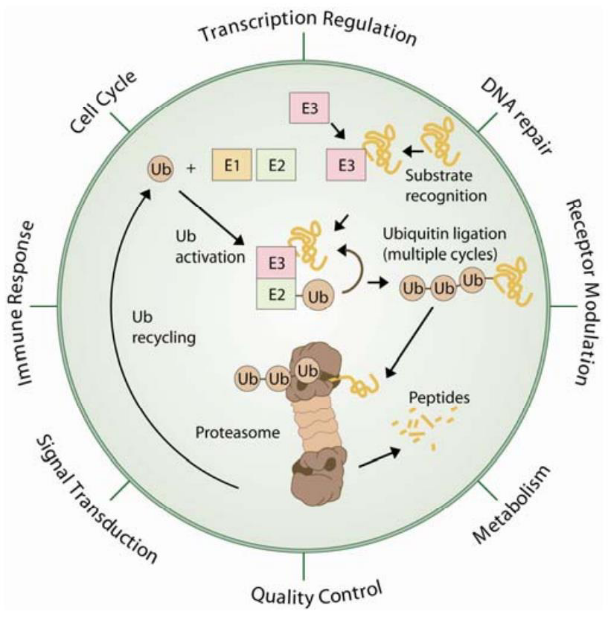
2 Ubiquitin Proteasome System
Although ubiquitin is generally used to target proteins for degradation via the E3 ubiquitin ligase system, it also has roles in other cellular processes - for instance, the cell cycle, quality control, and metabolism.
2.1 E3 Ligase and Ubiquitylation
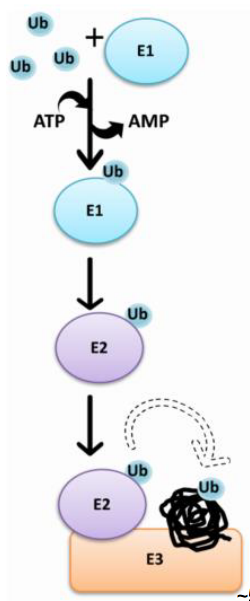
This process is threefold and has the following steps - it is usually used to tag proteins for degradation within the cell and is important for maintaining homeostasis, cellular processes, and also protein levels:
E1 Activation: The process begins with an enzyme called E1 (ubiquitin-activating enzyme). E1 activates ubiquitin, a small protein found in cells that serves as a tag for proteins destined for degradation. Activation involves the binding of ubiquitin to E1 in an ATP-dependent manner, forming a thioester bond between the ubiquitin molecule and E1.
E2 Conjugation: Once activated, the ubiquitin molecule is transferred to a second enzyme called E2 (ubiquitin-conjugating enzyme). E2 works as a carrier for the ubiquitin molecule, shuttling it to the target protein.
E3 Ligase: The E2 enzyme, now loaded with ubiquitin, interacts with a third enzyme called E3 ligase (ubiquitin-protein ligase). E3 ligase plays a crucial role in recognizing specific target proteins and facilitating the transfer of ubiquitin from E2 to the target protein.
Ubiquitination: The E3 ligase, along with the assistance of E2, transfers the ubiquitin molecule from the E2 enzyme to a lysine residue on the target protein, forming an isopeptide bond. This process can be repeated multiple times, resulting in the addition of multiple ubiquitin molecules to the target protein, forming a polyubiquitin chain.
Proteasomal Degradation: Once the target protein is tagged with ubiquitin chains, it is recognized and degraded by a large multi-subunit complex called the proteasome. The proteasome acts as the cell’s “garbage disposal,” breaking down tagged proteins into smaller peptides that can be recycled by the cell.
2.1.1 Terminal Regions of Ubiquitin
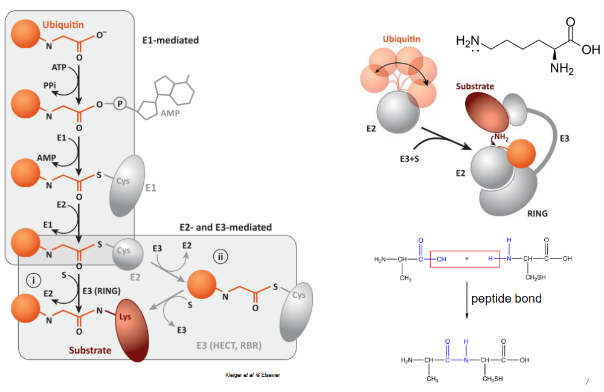
Ubiquitin is a small protein found in cells that plays a crucial role in tagging other proteins for degradation through the ubiquitin-proteasome system. Its structure consists of 76 amino acid residues and includes several key functional elements:
Cysteine (Cys): Ubiquitin contains a reactive thiol group (-SH) on its C-terminal glycine residue. This cysteine residue is where ubiquitin forms a thioester bond with the active site of the E1 ubiquitin-activating enzyme during the first step of the ubiquitination cascade. This thioester bond formation activates ubiquitin for conjugation to target proteins.
Lysine (Lys): Ubiquitin contains seven lysine residues (K6, K11, K27, K29, K33, K48, and K63), any of which can serve as attachment sites for additional ubiquitin molecules during the process of polyubiquitination. The type of polyubiquitin chain formed (e.g., K48-linked, K63-linked) determines the fate of the tagged protein, such as degradation by the proteasome or involvement in other cellular processes.
C-Terminus: The C-terminus of ubiquitin is where its Gly76 residue is located. This glycine residue is crucial for the formation of the isopeptide bond between ubiquitin and the lysine residue of the target protein during ubiquitination. The C-terminus is also where the ubiquitin molecule is initially activated by the E1 enzyme, forming a thioester bond with the cysteine residue of E1.
2.1.2 RING and HECT E3 Ligases
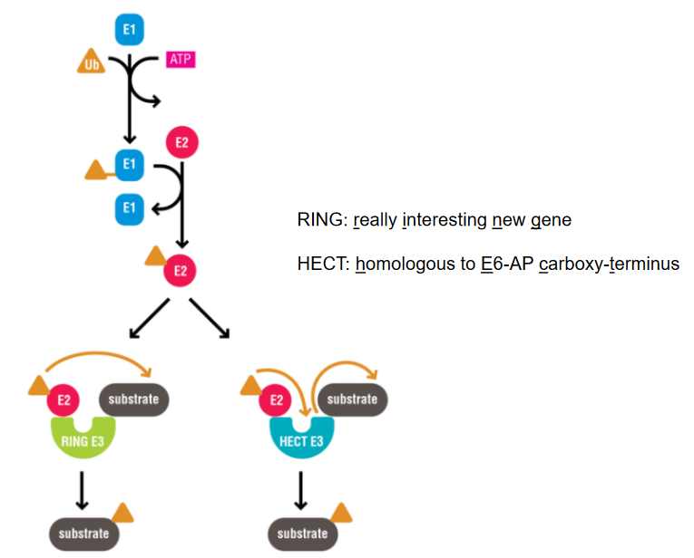
Two primary classes of E3 ligases, known as RING (Really Interesting New Gene) ligases and HECT (Homologous to the E6-AP Carboxyl Terminus) ligases, operate distinctly within this ubiquitination process.
Firstly, RING ligases function by directly mediating the transfer of ubiquitin from the E2 enzyme to the target protein without forming a covalent intermediate with ubiquitin. Although RING ligases lack intrinsic catalytic activity for ubiquitin transfer, they serve as scaffolds, bringing the E2 enzyme and the target protein into close proximity to facilitate efficient ubiquitin transfer. The RING domain, a characteristic feature of RING ligases, orchestrates the interaction between the E2 enzyme and the target protein, thereby enabling the ubiquitination process. Examples of RING ligases include Cullin-RING ligases (CRLs), which participate in the ubiquitination of diverse cellular proteins involved in crucial processes like cell cycle regulation and signal transduction.
On the other hand, HECT ligases operate differently by forming a thioester intermediate with ubiquitin prior to transferring it to the target protein. The HECT domain, distinctive to HECT ligases, contains a catalytic cysteine residue that forms a thioester bond with ubiquitin, facilitating its transfer to the target protein. Typically, HECT ligases exhibit a specific domain architecture, featuring an N-terminal domain responsible for substrate recognition and a C-terminal HECT domain accountable for ubiquitin transfer. Notable examples of HECT ligases include E6-AP (E6-associated protein) and NEDD4 (Neural Precursor Cell Expressed, Developmentally Down-Regulated 4), which respectively target specific proteins for ubiquitination and regulate the ubiquitination of membrane proteins and signaling molecules.
2.1.2.1 Cullin-RING Ligases
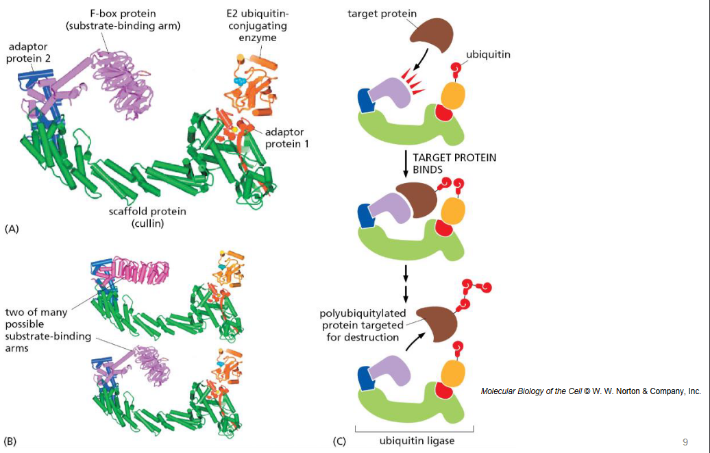
The Cullin-RING ubiquitin ligase (CRL) is a type of RING E3 ubiquitin ligase that plays a crucial role in the ubiquitination and subsequent degradation of specific target proteins within the cell. CRLs are part of a large family of multisubunit E3 ligases, and they are involved in the regulation of various cellular processes, including cell cycle progression, signal transduction, and response to environmental stimuli. Some key features of CRLs include:
Composition: CRLs are modular complexes composed of multiple subunits. The core components include a cullin protein, a RING finger protein, an adaptor protein, and a substrate recognition module. The cullin protein acts as a scaffold, providing a platform for the assembly of the other components.
Cullin Family Members: Cullin proteins are a family of scaffold proteins, with Cul1, Cul2, Cul3, Cul4, Cul5, and Cul7 being the most well-known members. Each cullin family member associates with specific adaptor proteins and substrate recognition modules, conferring specificity to the CRL complex.
RING Finger Protein: The RING finger protein, often referred to as Rbx1 or Rbx2, is responsible for binding to the E2 ubiquitin-conjugating enzyme and facilitating the transfer of ubiquitin from the E2 enzyme to the target protein.
Adaptor Protein: The adaptor protein (e.g., Skp1, Elongin C) connects the cullin scaffold to the substrate recognition module, ensuring proper substrate recruitment.
Substrate Recognition Module: This module is responsible for recognizing and binding to specific target proteins marked for ubiquitination. Different CRLs have distinct substrate recognition modules, contributing to the specificity of ubiquitination events.
Ubiquitin Transfer: Once assembled, the CRL complex catalyzes the transfer of ubiquitin molecules from the E2 enzyme to the lysine residues on the target protein, leading to the formation of a polyubiquitin chain. This ubiquitin chain serves as a signal for the targeted protein to be recognized and degraded by the proteasome.
Regulation of CRL Activity: The activity of CRLs is tightly regulated. Post-translational modifications, such as neddylation (attachment of the small ubiquitin-like modifier NEDD8 to cullin), are essential for CRL activation. Additionally, CRLs can be regulated by specific inhibitors and adaptors.
Cellular Functions: Due to their involvement in the ubiquitin-proteasome system, CRLs play critical roles in maintaining cellular homeostasis by controlling the levels of key regulatory proteins. Dysregulation of CRLs has been implicated in various diseases, including cancer.
2.1.3 Marking Proteins by Ubiquitin
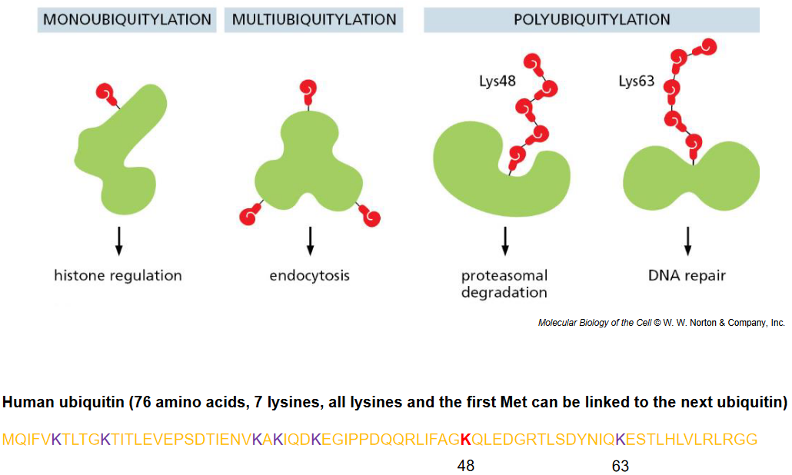
The marking of proteins by ubiquitin is a crucial process in cells, ensuring proper protein turnover and regulation. Ubiquitin is a small protein consisting of 76 amino acids. Its structure contains seven lysine residues (K6, K11, K27, K29, K33, K48, and K63) and an N-terminal methionine residue; each possible linkage leads to different cellular reactions.
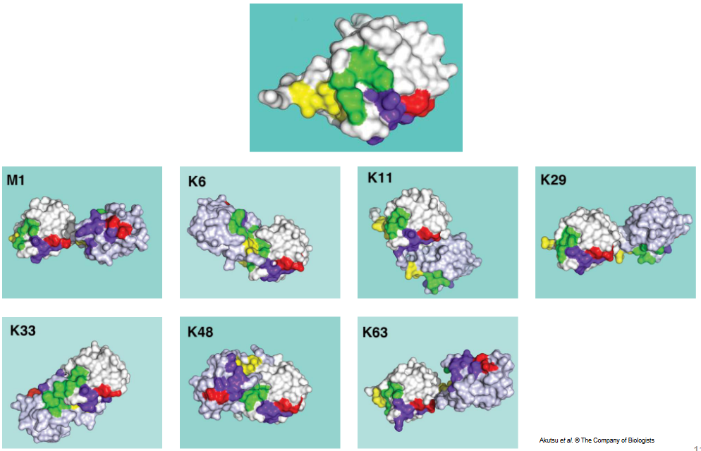
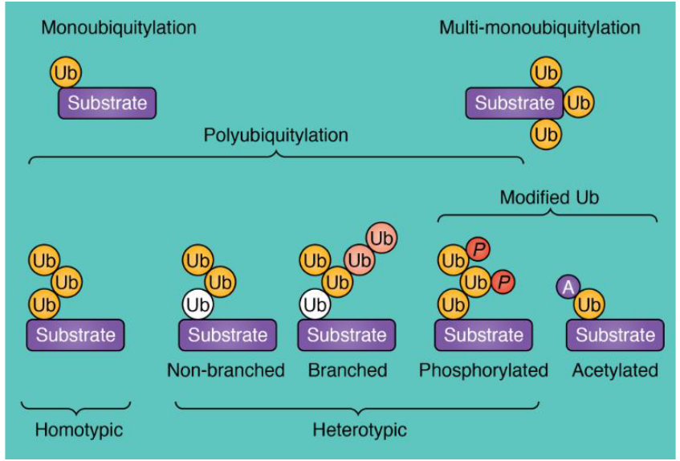
Ubiquitin can attach to target proteins through its lysine residues or its N-terminal methionine residue, forming different types of ubiquitin chains. The most well-characterized ubiquitin chain types are formed through the linkage of ubiquitin molecules via one of its seven lysine residues or through the N-terminal methionine residue. These different linkages lead to diverse cellular outcomes:
- Linear Chains: Ubiquitin can also form linear chains where the C-terminal glycine of one ubiquitin molecule is linked to the N-terminal methionine of the next ubiquitin molecule. Linear chains are involved in various signaling pathways, including NF-κB activation and apoptosis.
2.2 N-End Rule Pathway
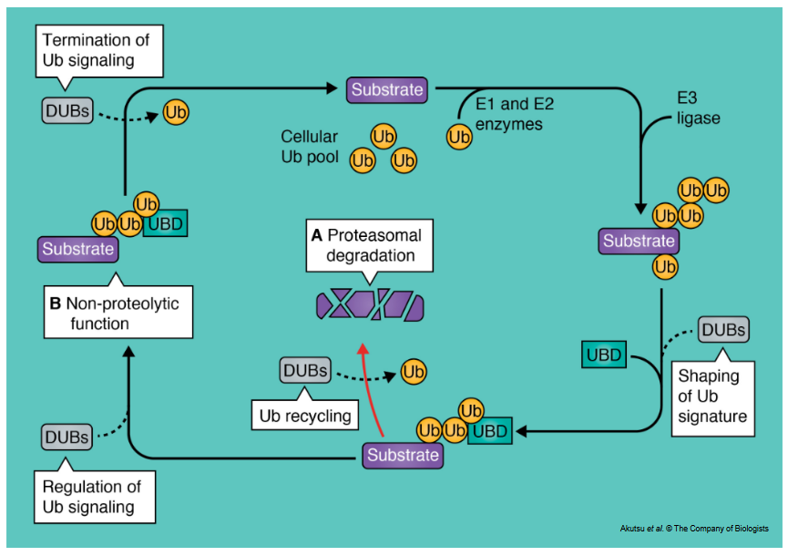
Deubiquitinases (DUBs) are enzymes that play a crucial role in the regulation of ubiquitin-mediated signaling pathways by removing ubiquitin molecules from proteins. While ubiquitination marks proteins for degradation or alters their function, deubiquitination mediated by DUBs reverses these modifications, allowing for precise control over protein stability, localization, and activity within the cell. They play some of the following roles in cells:
Regulation of Protein Stability: DUBs counteract the activity of ubiquitin ligases by removing ubiquitin chains from proteins targeted for degradation. By deubiquitinating these proteins, DUBs can stabilize them and prevent their degradation by the proteasome. This process is crucial for maintaining the appropriate levels of key regulatory proteins involved in various cellular processes.
Control of Signaling Pathways: Ubiquitination plays a central role in the regulation of signaling pathways involved in cell growth, differentiation, apoptosis, and immune responses. DUBs modulate these signaling pathways by removing ubiquitin chains from signaling molecules, thereby regulating their activity and localization. For example, DUBs can terminate signaling cascades by deubiquitinating and inactivating key signaling molecules.
DNA Repair: DUBs are involved in the regulation of DNA repair pathways by controlling the ubiquitination status of proteins involved in DNA damage response and repair. By removing ubiquitin chains from DNA repair proteins, DUBs help maintain genomic integrity and prevent the accumulation of DNA damage.
Endocytosis and Vesicular Trafficking: DUBs regulate the ubiquitination status of proteins involved in endocytosis, vesicular trafficking, and membrane protein turnover. By deubiquitinating membrane proteins, DUBs can control their internalization, recycling, and degradation, thereby regulating cellular processes such as receptor signaling and membrane protein turnover.
Mitochondrial Dynamics: DUBs play a role in regulating mitochondrial dynamics and function by modulating the ubiquitination status of proteins involved in mitochondrial quality control, fusion, fission, and mitophagy (selective autophagy of damaged mitochondria).
2.2.1 What is the Rule?
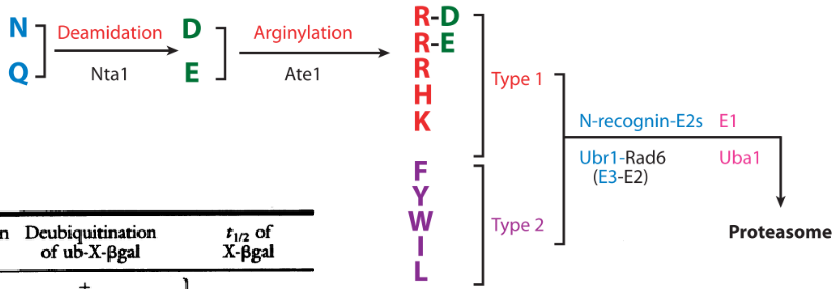
The N-end rule pathway is a proteolytic system found in cells that targets proteins for degradation based on the identity of their N-terminal amino acid residue. This pathway was first proposed by Alexander Varshavsky in the late 1980s and has since been extensively studied in various organisms, including yeast, plants, and mammals. Key features of the N-end rule pathway include:
Recognition of N-terminal Residues: The N-end rule pathway recognizes specific amino acids at the N-terminus of proteins. The identity of the N-terminal residue determines the fate of the protein. Certain amino acids, known as destabilizing residues, target proteins for degradation, while others are considered stabilizing residues.
Degradation Signal: Proteins with destabilizing N-terminal residues are marked for degradation by the covalent attachment of ubiquitin molecules. This process involves the sequential action of enzymes known as N-terminal amino peptidases and E3 ubiquitin ligases, which recognize and ubiquitinate the target proteins, respectively.
Recognition by the Proteasome: Ubiquitinated proteins are recognized and degraded by the proteasome, a large multi-subunit protease complex found in the cytoplasm and nucleus of eukaryotic cells. The proteasome cleaves ubiquitinated proteins into short peptides, which can then be further degraded into amino acids by cellular peptidases.
Function in Protein Quality Control: The N-end rule pathway serves as an important mechanism for maintaining protein quality control in cells. It targets misfolded or damaged proteins for degradation, thereby preventing the accumulation of potentially harmful protein aggregates and promoting cellular homeostasis.
Regulation of Cellular Processes: The N-end rule pathway regulates various cellular processes, including cell cycle progression, DNA repair, apoptosis, and response to environmental stresses. By controlling the stability of key regulatory proteins, the N-end rule pathway helps orchestrate cellular responses to internal and external cues.
Examples of destabilizing N-terminal residues include methionine (Met) followed by certain amino acids such as arginine (Arg), lysine (Lys), phenylalanine (Phe), and tryptophan (Trp). These residues are recognized by specific components of the N-end rule pathway and targeted for degradation.
2.2.2 Substrates Produced
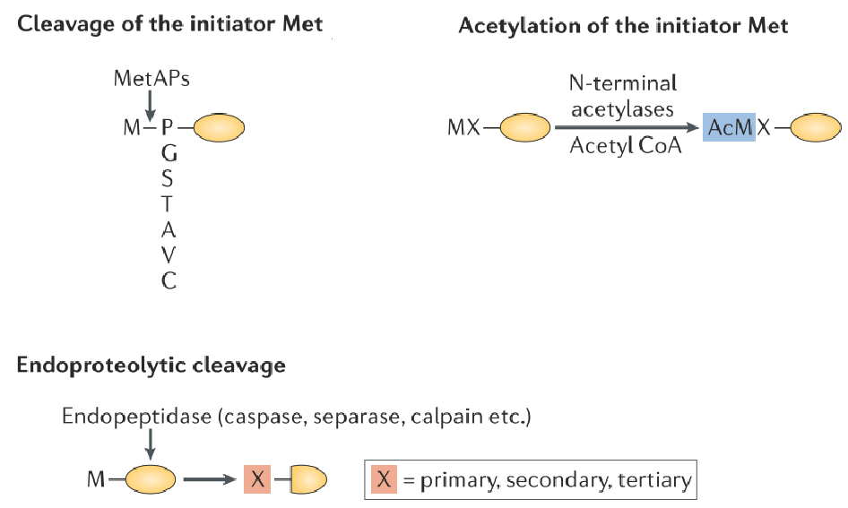
Here are some examples of physiological substrates of the N-end rule pathway:
Transcription Factors: Certain transcription factors are targeted by the N-end rule pathway for degradation, regulating gene expression and cellular responses to environmental cues. For example, the transcription factor MATα2 in yeast and the transcription factor Pd in mammals are degraded by the N-end rule pathway.
Cell Cycle Regulators: Proteins involved in cell cycle regulation, such as cyclins and cyclin-dependent kinase inhibitors (CDKIs), are substrates of the N-end rule pathway. Degradation of these proteins by the N-end rule pathway helps control cell cycle progression and ensures proper cell division.
DNA Repair Proteins: Components of DNA repair pathways, including proteins involved in base excision repair, nucleotide excision repair, and homologous recombination, can be targeted by the N-end rule pathway. Degradation of damaged or misfolded DNA repair proteins helps maintain genomic integrity and prevents the accumulation of DNA lesions.
Apoptotic Regulators: Proteins involved in apoptosis, or programmed cell death, are regulated by the N-end rule pathway. For example, certain pro-apoptotic proteins, such as Bid in mammals, are degraded by the N-end rule pathway, contributing to the control of apoptosis.
Cell Signaling Proteins: Components of cell signaling pathways, including kinases, phosphatases, and signaling adapters, can be targeted by the N-end rule pathway. Degradation of signaling proteins by the N-end rule pathway helps regulate cellular responses to extracellular signals and maintain signaling homeostasis.
Proteins with Misfolded or Damaged Domains: Proteins that become misfolded or damaged due to cellular stresses or mutations can be recognized and degraded by the N-end rule pathway. Degradation of misfolded or damaged proteins prevents the accumulation of toxic protein aggregates and promotes cellular health.
2.3 Protein Quality Control by UPS
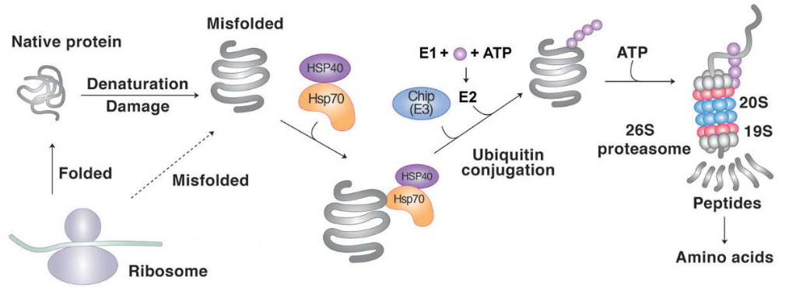
The above figure shows how denatured or misfolded proteins are targeted for destruction by the 26s proteasome. Ubiquitin conjugation marks structures for degradation as previously mentioned.
2.3.1 Protein Secretory Pathway
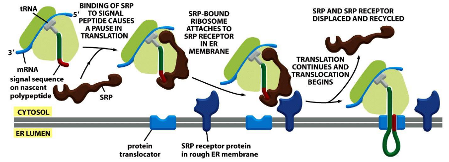
The protein secretory pathway is a fundamental cellular process responsible for the synthesis, modification, and transport of proteins destined for secretion or localization to various cellular compartments. It involves a series of highly coordinated steps that occur within different organelles and membrane-bound compartments of the cell. Here’s an overview of the protein secretory pathway:
Protein Synthesis in the Cytoplasm: Protein synthesis begins on ribosomes in the cytoplasm, where messenger RNA (mRNA) molecules are translated into polypeptide chains. These polypeptide chains contain signal sequences, often located at the N-terminus, which direct them to the endoplasmic reticulum (ER) for further processing and secretion.
Translocation into the Endoplasmic Reticulum (ER): Proteins targeted for secretion or membrane insertion are co-translationally translocated into the lumen of the ER. This process involves the recognition of signal sequences by the signal recognition particle (SRP) and its receptor, which direct the ribosome-nascent chain complex to the ER membrane. Translocation occurs through proteinaceous channels called translocons.
Protein Folding and Modification in the Endoplasmic Reticulum (ER): Once inside the ER lumen, newly synthesized proteins undergo folding, assembly, and post-translational modifications such as glycosylation, disulfide bond formation, and proteolytic cleavage. These processes ensure proper protein conformation and functionality.
Quality Control in the Endoplasmic Reticulum (ER): The ER contains mechanisms for quality control to ensure that only properly folded and assembled proteins are transported further along the secretory pathway. Misfolded or unassembled proteins are recognized and targeted for degradation by the ER-associated degradation (ERAD) pathway.
Export from the Endoplasmic Reticulum (ER): Proteins that pass quality control in the ER are packaged into transport vesicles derived from the ER membrane. These vesicles bud off and fuse with the Golgi apparatus, a central organelle in the secretory pathway.
Processing and Sorting in the Golgi Apparatus: Within the Golgi apparatus, proteins undergo further post-translational modifications, including glycosylation, sulfation, phosphorylation, and proteolytic cleavage. The Golgi also acts as a sorting station, directing proteins to their final destinations, such as the plasma membrane, lysosomes, or secretion outside the cell.
Secretion and Exocytosis: Proteins destined for secretion are transported in vesicles from the trans-Golgi network to the cell surface. Upon reaching the plasma membrane, these vesicles fuse with the membrane through a process called exocytosis, releasing their contents into the extracellular space.
2.3.2 ER-Associated Degradation
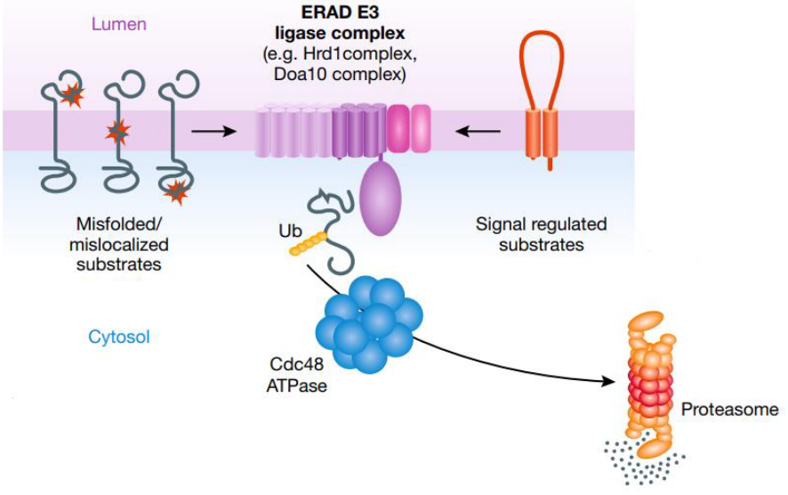
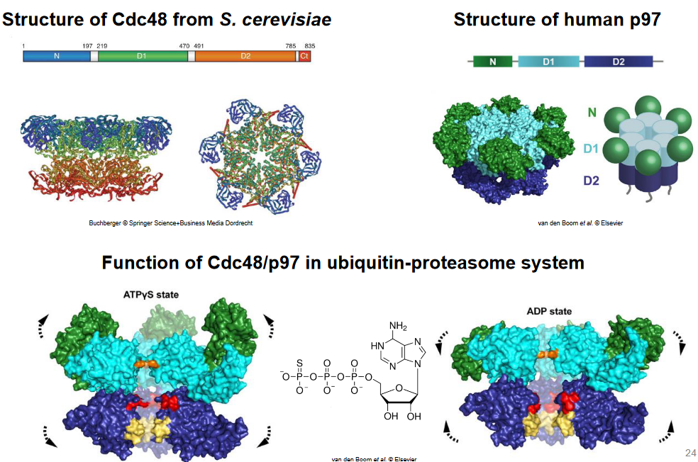
ERAD, or ER-associated degradation, is a quality control mechanism in eukaryotic cells responsible for identifying and targeting misfolded or unassembled proteins in the endoplasmic reticulum (ER) for degradation. The ERAD pathway ensures that only properly folded and functional proteins are allowed to proceed through the secretory pathway and reach their intended destinations within the cell. Here’s how ERAD works:
Recognition of Misfolded Proteins: During protein synthesis, the ER serves as the primary site for the folding and maturation of secretory and membrane proteins. However, not all proteins fold correctly, and misfolded or improperly assembled proteins may accumulate in the ER lumen or membrane. These misfolded proteins are recognized by ER quality control systems, which include chaperone proteins and lectins that monitor protein folding status.
Ubiquitination: Upon recognition of misfolded proteins, they are targeted for degradation through the covalent attachment of ubiquitin molecules. Ubiquitination is mediated by a series of enzymes, including ubiquitin-activating enzymes (E1s), ubiquitin-conjugating enzymes (E2s), and ubiquitin ligases (E3s). In the case of ERAD, specific E3 ubiquitin ligases recognize misfolded proteins and facilitate their ubiquitination.
Extraction from the ER Membrane: Misfolded membrane proteins must be extracted from the ER membrane before they can be degraded by the proteasome, a large proteolytic complex found in the cytoplasm. This extraction process involves the action of protein complexes such as the ATPase-containing Cdc48/p97 complex (also known as valosin-containing protein, VCP, in mammals), which extracts the misfolded proteins from the ER membrane into the cytoplasm.
Degradation by the Proteasome: Once extracted from the ER membrane, ubiquitinated misfolded proteins are targeted to the proteasome for degradation. The proteasome recognizes polyubiquitinated proteins and proteolytically cleaves them into short peptides. These peptides can then be further degraded into amino acids by cytoplasmic peptidases.
Regulation and Coordination: The ERAD pathway is tightly regulated to ensure efficient removal of misfolded proteins while minimizing the degradation of properly folded proteins. It involves coordination between various components, including chaperones, ubiquitin ligases, and the proteasome, as well as post-translational modifications and signaling pathways.
2.3.2.1 Cdc48 / p97: AAA+ ATPase in Protein Degradation
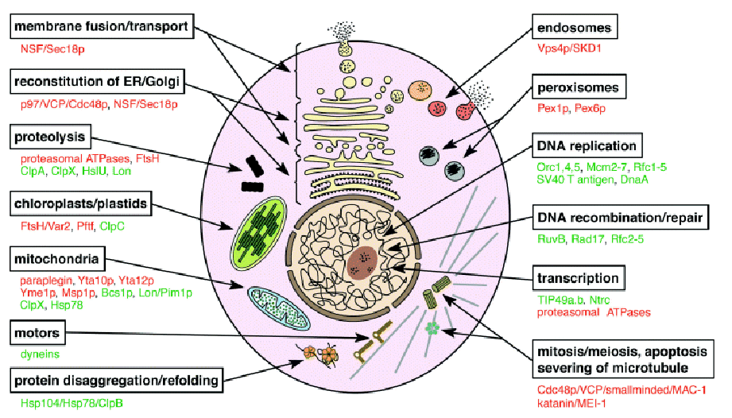
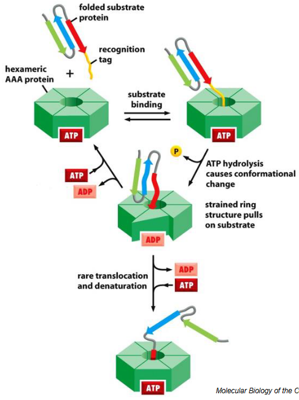
The AAA+ (ATPases Associated with diverse cellular Activities) family of proteins is a large and diverse group of ATPases found in all domains of life. These proteins share a common structural feature known as the AAA+ domain, which is characterized by conserved sequence motifs and is responsible for ATP binding and hydrolysis. AAA+ proteins participate in a wide range of cellular processes, including protein degradation, DNA replication, DNA repair, membrane fusion, and vesicle trafficking. Here’s an overview of the general mechanism of AAA+ family proteins:
Oligomerization: AAA+ proteins typically function as oligomers, forming complex structures composed of multiple subunits. These subunits may assemble into hexameric rings, double rings, or other higher-order oligomeric structures depending on the specific protein and its function.
ATP Binding and Hydrolysis: The AAA+ domain contains conserved Walker A and Walker B motifs, which are responsible for ATP binding and hydrolysis, respectively. Upon ATP binding, conformational changes occur within the AAA+ domain, resulting in the formation of a catalytically active ATPase site. ATP hydrolysis fuels the mechanical work performed by AAA+ proteins, driving conformational changes that are often essential for their biological functions.
Substrate Recognition and Binding: AAA+ proteins interact with specific substrate molecules through specialized substrate-binding domains or motifs located adjacent to the AAA+ domain. These substrate-binding domains recognize and bind to target proteins, nucleic acids, or other substrates, facilitating their processing, modification, or degradation.
Mechanical Work and Substrate Remodeling: ATP hydrolysis by AAA+ proteins generates mechanical force that drives conformational changes in the protein complex. These conformational changes can result in the remodeling, unfolding, or translocation of substrates, depending on the specific function of the AAA+ protein. For example, AAA+ proteins involved in protein degradation may unfold and translocate substrate proteins through a central pore formed by the AAA+ oligomer.
Regulation and Coordination: The activity of AAA+ proteins is tightly regulated to ensure proper timing and coordination of cellular processes. Regulation may involve factors such as post-translational modifications, cofactors, allosteric regulators, and interactions with other proteins or cellular components. For example, ATP binding and hydrolysis kinetics, as well as interactions with regulatory proteins, can modulate the activity of AAA+ proteins involved in DNA replication or protein degradation.
2.3.3 Cdc48 / p97 Function in UBS
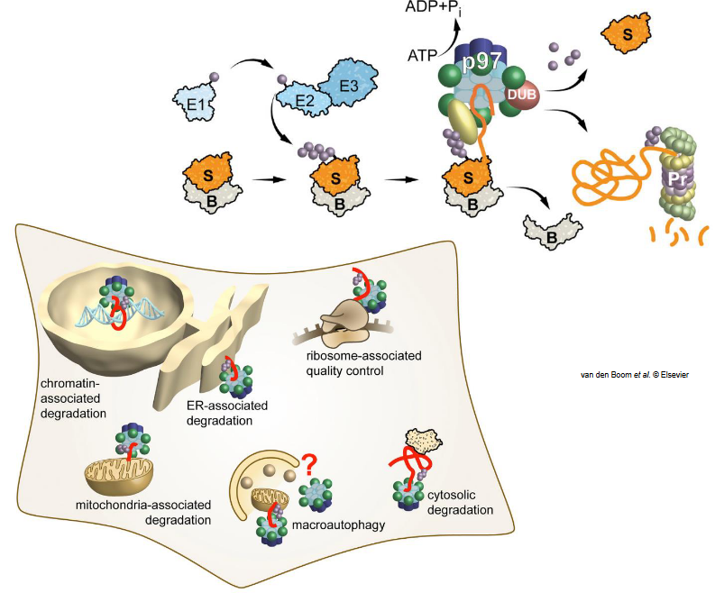
Cdc48, also known as p97 in mammals, is a highly conserved AAA+ (ATPases Associated with diverse cellular Activities) ATPase protein that plays a crucial role in various cellular processes, including the ubiquitin-proteasome system (UPS). Its function in the UPS is diverse and multifaceted, contributing to protein quality control, protein degradation, and various cellular pathways. Here’s an overview of the functions of Cdc48/p97 in the ubiquitin-proteasome system:
Protein Degradation and ERAD (ER-Associated Degradation): Cdc48/p97 is a central player in ERAD, a quality control mechanism responsible for identifying and targeting misfolded or unassembled proteins in the endoplasmic reticulum (ER) for degradation by the proteasome. Cdc48/p97 extracts ubiquitinated substrates from the ER membrane and facilitates their delivery to the proteasome for degradation. It collaborates with other ERAD components, including E3 ubiquitin ligases and ubiquitin-conjugating enzymes, to ensure efficient protein degradation and maintain ER homeostasis.
Ubiquitin-Dependent Protein Degradation: Cdc48/p97 participates in the degradation of ubiquitinated proteins in the cytoplasm and nucleus. It collaborates with specific ubiquitin ligases to extract ubiquitinated proteins from cellular structures, protein complexes, or membranes, facilitating their degradation by the proteasome. Cdc48/p97 also plays a role in disassembling protein complexes or aggregates targeted for degradation, promoting the recycling of ubiquitin and preventing the accumulation of toxic protein aggregates.
Cell Cycle Regulation: Cdc48/p97 is involved in various aspects of cell cycle regulation, including mitotic progression, DNA replication, and DNA repair. It participates in the turnover of cell cycle regulators, DNA replication factors, and checkpoint proteins by facilitating their ubiquitin-dependent degradation. Cdc48/p97-mediated protein degradation ensures proper cell cycle progression and maintenance of genomic integrity.
Protein Quality Control and Stress Response: Cdc48/p97 contributes to protein quality control and stress response pathways by eliminating misfolded, damaged, or aggregated proteins. It collaborates with molecular chaperones, proteases, and other protein quality control factors to recognize, extract, and degrade aberrant proteins, thereby maintaining cellular homeostasis and viability under stress conditions.
Membrane Dynamics and Vesicle Trafficking: Cdc48/p97 participates in membrane dynamics, vesicle trafficking, and organelle biogenesis by regulating the turnover of membrane-associated proteins and lipid-modifying enzymes. It mediates the extraction and degradation of membrane proteins involved in membrane fusion, vesicle formation, and organelle assembly, contributing to the maintenance of cellular membrane integrity and function.
2.4 Degradation by the Proteasome
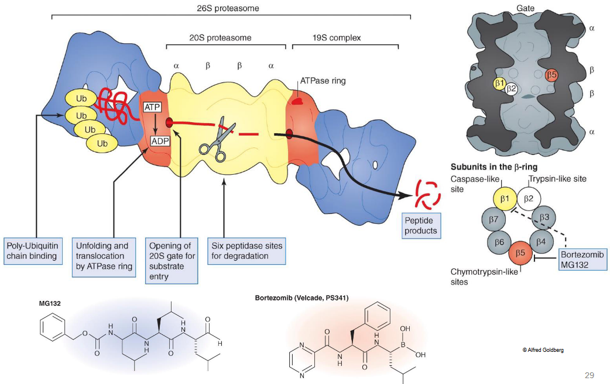
The proteasome, a critical component of cellular protein degradation machinery, is a large, multi-subunit protease complex found within eukaryotic cells. It plays a fundamental role in maintaining cellular homeostasis by selectively degrading proteins marked for destruction by ubiquitin. Structurally, the proteasome consists of a core particle, known as the 20S proteasome, which serves as the central catalytic unit responsible for protein degradation. This cylindrical core particle comprises four stacked rings, with two outer rings composed of seven α subunits each and two inner rings made up of seven β subunits each.
Each β subunit within the 20S proteasome possesses catalytic activity, allowing the proteasome to cleave peptide bonds within target proteins. The β subunits are categorized into three distinct types: β1, β2, and β5, each exhibiting specific peptidase activities. The β1 subunits display caspase-like activity, cleaving after acidic residues; the β2 subunits exhibit trypsin-like activity, cleaving after basic residues; and the β5 subunits demonstrate chymotrypsin-like activity, cleaving after hydrophobic residues.
Proteins targeted for degradation are tagged with a small protein called ubiquitin, marking them for recognition and processing by the proteasome. The recognition and degradation of ubiquitinated proteins involve a complex series of events coordinated by various cellular components, including E1 ubiquitin-activating enzymes, E2 ubiquitin-conjugating enzymes, and E3 ubiquitin ligases. Once recognized, ubiquitinated proteins are unfolded and translocated into the central chamber of the 20S proteasome, where they undergo proteolytic degradation into short peptide fragments.
2.4.1 Multiple Myeloma and Proteasome Inhibitor
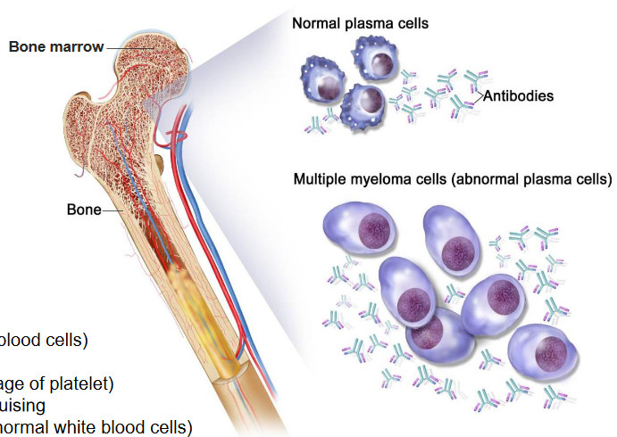
Multiple myeloma is a kind of cancer of the plasma cells. One’s risk of developing multiple myeloma increases as they become older - most people who have this kind of cancer get diagnosed in their mid-60s.
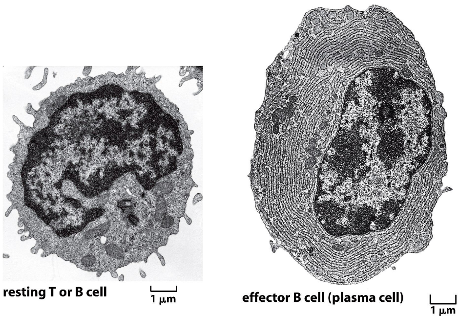
Some symptoms of this cancer include:
- Anemia (i.e., a shortage of red blood cells) resulting in fatigue
- Thrombocytopenia (i.e., a lack of platelets) resulting in easy bleeding and bruising
- Leukopenia (i.e., a lack of white blood cells) resulting in frequent infections
2.4.2 Aneuploidy and Toxic Stress
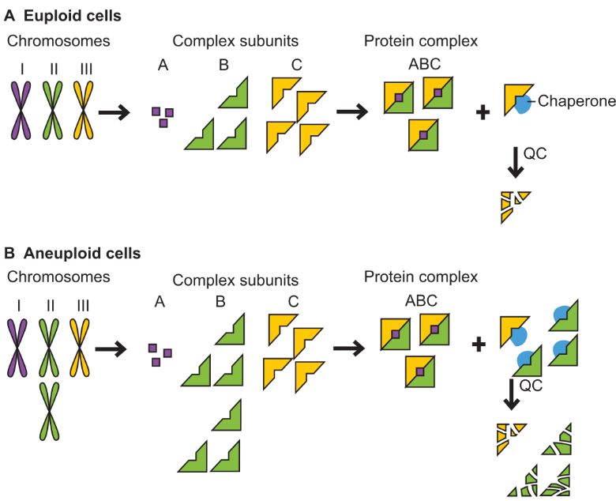
Aneuploidy refers to an abnormal number of chromosomes in a cell, typically resulting from errors in cell division processes such as mitosis or meiosis. This condition leads to cells having either fewer or more chromosomes than the normal diploid number characteristic of the species. Aneuploidy can occur in various organisms, including humans, and it is associated with several health conditions, including developmental disorders and cancer.
Proteotoxic stress, on the other hand, refers to the cellular stress caused by an imbalance in protein homeostasis, leading to the accumulation of misfolded or aggregated proteins. Proteotoxic stress can result from various factors such as environmental stressors, genetic mutations, or disruptions in protein quality control mechanisms. The accumulation of misfolded proteins can overwhelm the cellular protein degradation systems, including the ubiquitin-proteasome system and autophagy pathways, leading to cellular dysfunction and disease.
Aneuploid cells often experience proteotoxic stress due to alterations in gene dosage and expression resulting from chromosome imbalances. The abnormal expression levels of genes encoding chaperones, proteases, and components of the protein degradation machinery can disrupt protein folding, assembly, and turnover processes, contributing to proteotoxic stress in aneuploid cells.
Conversely, proteotoxic stress can also promote aneuploidy by inducing genomic instability and impairing cell division processes. Misfolded or aggregated proteins can interfere with the function of key cellular pathways involved in DNA replication, repair, and chromosome segregation, leading to the accumulation of genetic abnormalities and aneuploidy over time.
2.4.3 Problems with Proteasomal Degradation
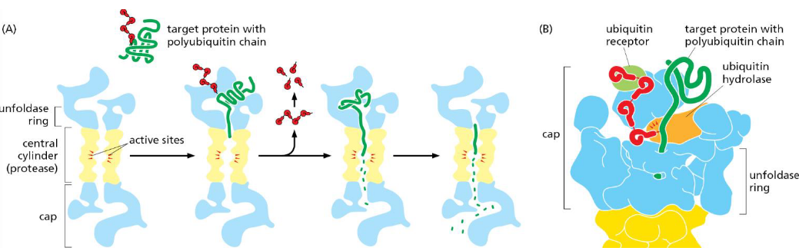
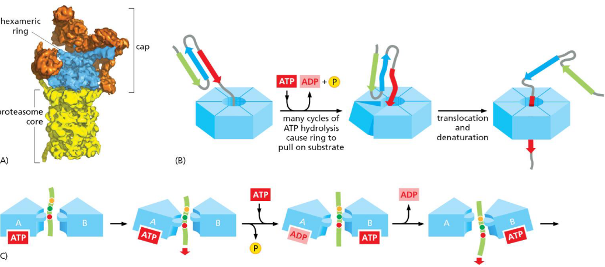
Several problems can arise when proteasomal degradation is impaired or dysregulated:
Accumulation of Misfolded or Damaged Proteins: Impaired proteasomal degradation can lead to the accumulation of misfolded or damaged proteins within cells. These proteins may form aggregates or toxic oligomers, disrupting cellular function and contributing to the pathogenesis of neurodegenerative diseases such as Alzheimer’s, Parkinson’s, and Huntington’s disease.
Dysregulation of Protein Turnover: Proper protein turnover is essential for maintaining cellular function and responding to dynamic changes in cellular environments. Dysregulation of proteasomal degradation can disrupt protein turnover rates, leading to the accumulation of specific proteins that are not degraded when they should be, or the premature degradation of proteins essential for cellular processes.
Protein Aggregation and Neurodegeneration: Impaired proteasomal degradation is implicated in the pathogenesis of neurodegenerative diseases characterized by the accumulation of protein aggregates, such as tau tangles in Alzheimer’s disease and α-synuclein aggregates in Parkinson’s disease. The failure to clear these aggregates can lead to neuronal dysfunction and cell death.
Cell Cycle Dysregulation: The proteasome plays a crucial role in regulating cell cycle progression by degrading key cell cycle regulators, such as cyclins and cyclin-dependent kinase inhibitors. Dysregulation of proteasomal degradation can lead to aberrant cell cycle progression, uncontrolled cell proliferation, and genomic instability, contributing to cancer development and progression.
Immune System Dysfunction: The proteasome is involved in the processing of antigens for presentation on major histocompatibility complex (MHC) molecules, a critical step in the activation of the immune response. Impaired proteasomal degradation can lead to defects in antigen presentation, compromising immune surveillance and response to pathogens.
Drug Resistance in Cancer: Cancer cells often develop resistance to chemotherapy drugs by upregulating proteasomal activity, leading to increased degradation of anti-cancer proteins. Targeting the proteasome with proteasome inhibitors can overcome drug resistance in some cases by inducing apoptosis in cancer cells.
Aging and Age-Related Diseases: Dysregulation of proteasomal degradation is associated with aging and age-related diseases. As cells age, the efficiency of proteasomal degradation declines, leading to the accumulation of damaged proteins and contributing to the aging process and age-related diseases.
2.5 UPS and Neurodegeneration
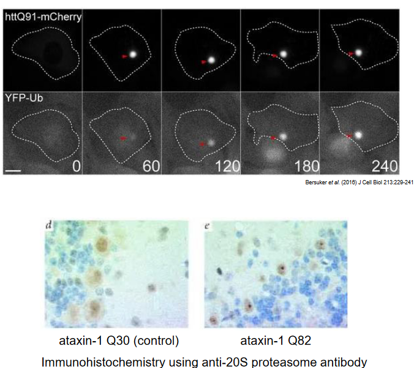
Protein aggregates, which result from the misfolding and aggregation of proteins, can have significant impacts on the Ubiquitin-Proteasome System (UPS), the primary mechanism responsible for protein degradation in eukaryotic cells. Here are some key impacts of protein aggregates on the UPS:
Overload of the UPS: Protein aggregates can overwhelm the capacity of the UPS, leading to a backlog of ubiquitinated proteins awaiting degradation. The UPS relies on the coordinated action of E1 ubiquitin-activating enzymes, E2 ubiquitin-conjugating enzymes, and E3 ubiquitin ligases to tag proteins with ubiquitin for degradation by the proteasome. However, the excessive accumulation of misfolded or aggregated proteins can saturate the UPS, impairing its ability to degrade other cellular proteins.
Inhibition of Proteasomal Activity: Protein aggregates can directly inhibit proteasomal activity by physically obstructing the proteasome’s access to substrate proteins or by interfering with the unfolding and translocation of substrates into the proteasomal core particle. Additionally, certain types of protein aggregates, such as amyloid fibrils, can bind to and sequester proteasomal subunits, further impairing proteasome function.
Induction of Proteasome Stress: The presence of protein aggregates within cells can induce a cellular stress response known as proteasome stress. Proteasome stress is characterized by the upregulation of genes encoding proteasome subunits, as well as components of the UPS and protein quality control machinery. While proteasome stress initially serves to enhance the cell’s capacity to degrade misfolded proteins, chronic or severe proteasome stress can lead to cellular dysfunction and apoptosis.
Formation of Resistant Aggregates: Some protein aggregates, particularly those associated with neurodegenerative diseases such as Alzheimer’s and Parkinson’s disease, are highly stable and resistant to degradation by the UPS. These aggregates may contain cross-linked or ubiquitinated proteins that are difficult for the proteasome to recognize and process. As a result, the accumulation of resistant protein aggregates can exacerbate proteotoxicity and contribute to disease progression.
Impairment of Protein Quality Control Pathways: The presence of protein aggregates can impair other protein quality control pathways, such as chaperone-mediated autophagy (CMA) and macroautophagy. While the UPS primarily degrades short-lived and soluble proteins, autophagy pathways are responsible for the degradation of larger protein aggregates and damaged organelles. However, the chronic accumulation of protein aggregates can overwhelm autophagy pathways, further exacerbating proteotoxicity and cellular dysfunction.